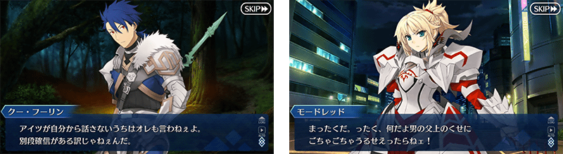
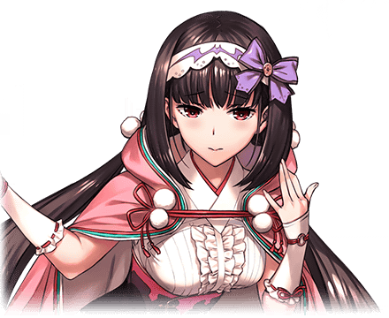
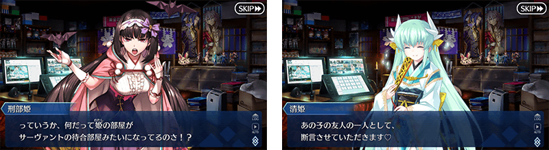
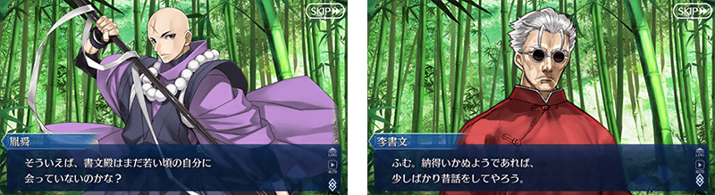
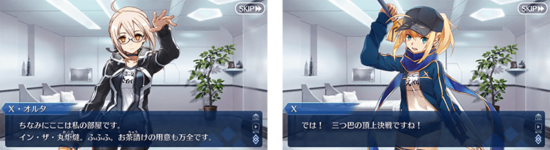
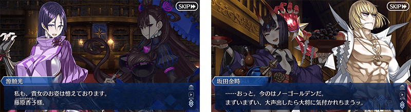
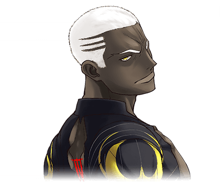
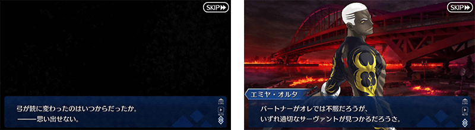
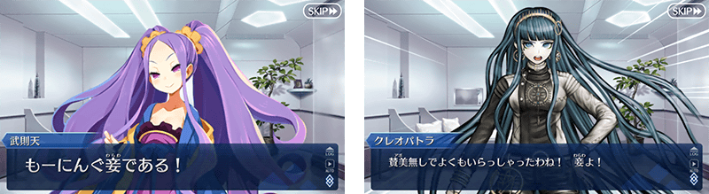
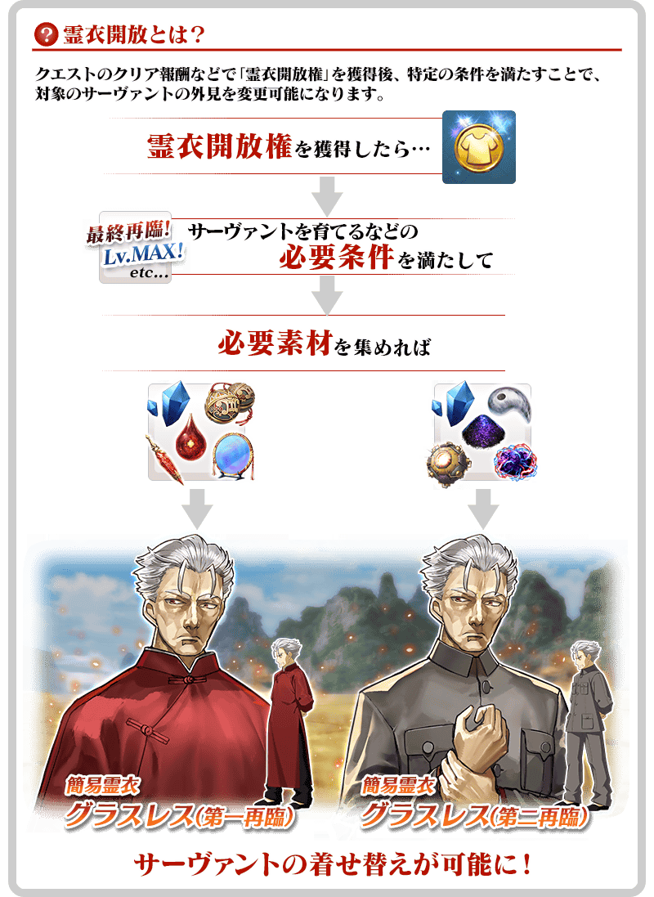

以期間限定舉辦「幕間物語宣傳活動 第9彈」。
宣傳活動舉辦中所有從者的幕間物語的AP消耗量變成1/2！
藉此機會滿足開放條件，通過喜愛從者的物語吧！
※本頁面皆為開發中圖片。會有與實際圖片相異的情況。
◆舉辦期間◆
2019年6月5日(三) 17:00～
6月12日(三) 11:59
◆對象關卡◆
所有的幕間物語
※也包含自2019年6月5日(三) 17:00開放的幕間物語。
◆有關從者真名的注意◆
在2018年12月31日(二) 23:00以後新配信的主線故事及期間限定活動、一部份關卡、宣傳活動及召喚中，會顯示隱藏真名的對象從者真名。
※已經配信的主線故事、復刻活動、一部份關卡中不在此限。
◆開放時間◆ 2019年6月5日(三) 17:00～
◆對象從者◆
・亞瑟・潘德拉剛〔Prototype〕
・刑部姬
・李書文(Assassin)
・謎之女主角X〔Alter〕
・源賴光(Berserker)
・Emiya〔Alter〕
・不夜城的Assassin(武則天)

|
◆關卡開放條件◆ ◆關卡通過報酬◆ |

|  |
◆關卡通過報酬◆ |


|
◆關卡通過報酬◆ |
 |

|
◆關卡通過報酬◆ |

|
◆關卡通過報酬◆ |

|  |
◆關卡通過報酬◆ |

|
◆關卡通過報酬◆ |

2種「★5(SSR)李書文(Assassin)」的靈衣開放權登場！
自2019年6月5日(三) 17:00，在達文西工房的「魔力稜鏡交換」追加「★5(SSR)李書文(Assassin)」的靈衣開放權。
此靈衣開放權，要通過「★5(SSR)李書文(Assassin)」的幕間物語後才會開放交換。
另外，想開放靈衣開放的話，除了靈衣開放權外再加上必須滿足一些開放條件。
◆道具開放條件◆
通過「★5(SSR)李書文(Assassin)」的幕間物語
◆追加時間◆
2019年6月5日(三) 17:00～
◆追加道具(常駐)◆
| 追加道具 | 能交換次數 | 1次交換所需的 魔力稜鏡數 |
|---|---|---|
| 簡易靈衣「グラスレス(第一再臨)」開放權 | 1次 | 500個 |
| 簡易靈衣「グラスレス(第二再臨)」開放權 | 1次 | 500個 |
※在「魔力稜鏡交換」追加的「★5(SSR)李書文(Assassin)」的靈衣做為常駐，沒有交換期限。
◆有關靈衣開放權的注意◆ ※本次追加的「★5(SSR)李書文(Assassin)」的靈衣是只有外觀的變化，語音沒變化的「簡易靈衣」。

※「靈衣開放」後自動切換戰鬥角色和圖示。若想回到「靈衣開放」前的狀態和變成其他再臨階段的情況，可自從者詳細畫面變更。 ※語音與「靈衣開放」前的狀態相同。 ※透過「靈衣開放」只變更從者的外觀，職階和能力等沒有變化。

「靈衣開放」是自強化畫面進行。
介紹新開放2種靈衣的「★5(SSR)李書文(Assassin)」寶具演出！
在「Fate/Grand Order」官方網站內的公告中，以影片公開寶具演出，敬請確認。
其他還有，期間限定「幕間物語宣傳活動第9彈Pick Up召喚(每日交替)」同時舉辦！
關於詳情，請自下述橫幅確認。